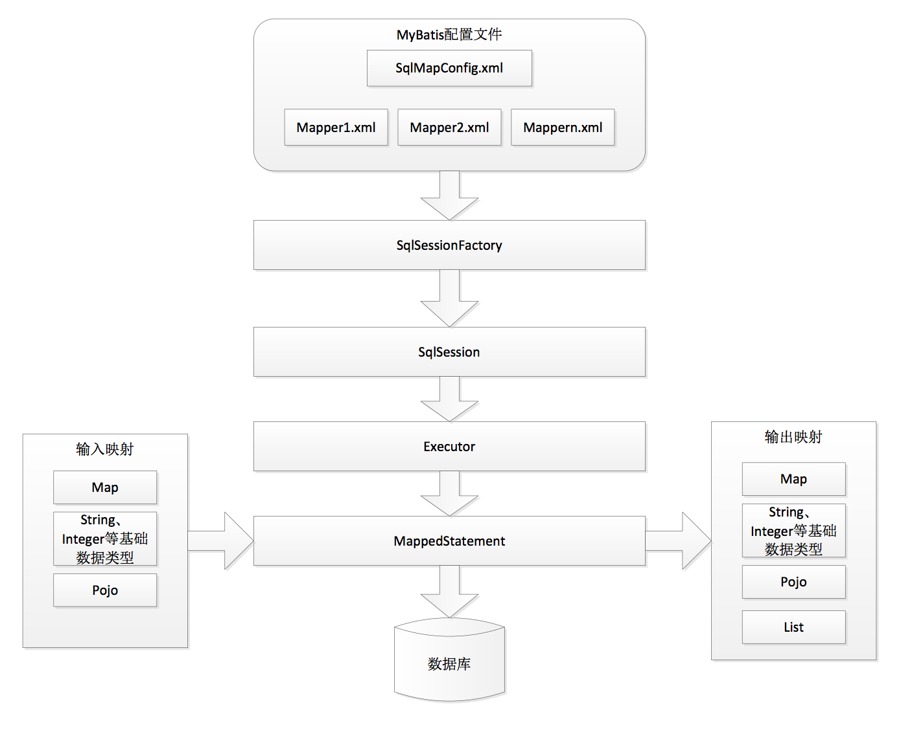
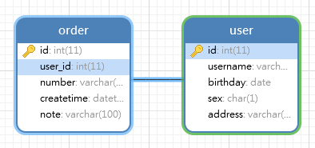
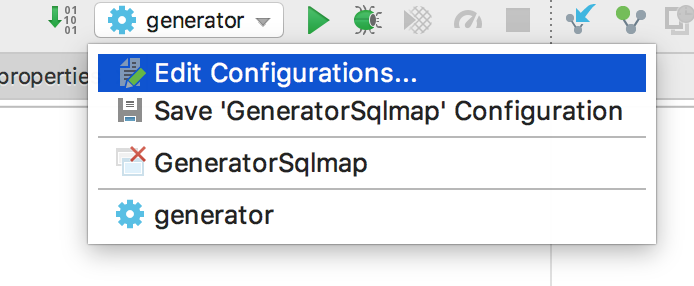
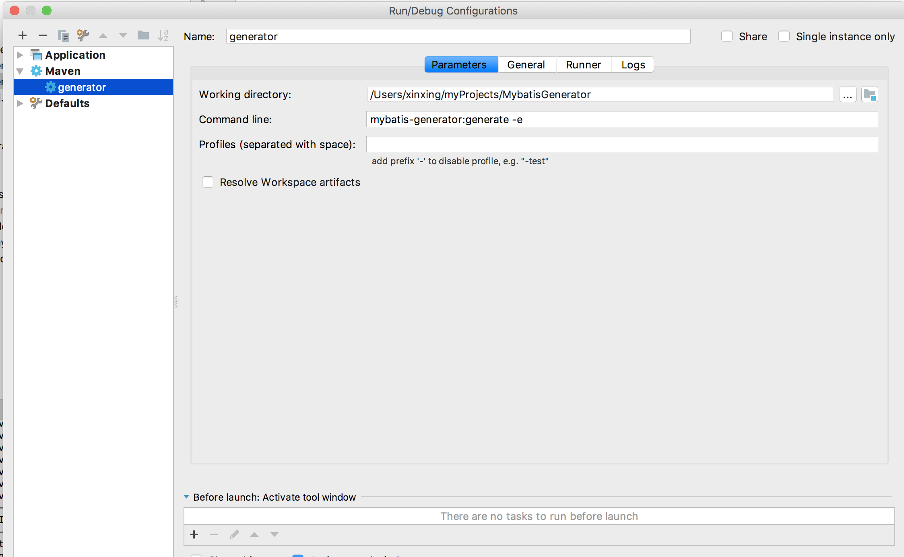

MyBatis 前身是Apache的一个开源项目iBatis。MyBatis是一个持久层框架，它对JDBC操作数据库的过程进行封装，开发者只需要关注SQL本身，不需要花费精力去处理注册驱动、创建连接、创建Statement、设置参数、检索结果等操作。
MyBatis通过XML或者注解的方式将要执行的各种Statement配置起来，通过Java对象和Statement中的SQL进行映射生成最终执行的SQL语句，将查询结果映射成Java对象并返回。
加载mysql驱动
创建连接Connection
定义sql语句
获取预处理语句prepareStatement
设置sql语句参数
向数据库发出sql，执行查询得到结果集
遍历结果集
释放资源
1 2 3 4 5 6 7 8 9 10 11 12 13 14 15 16 17 18 19 20 21 22 23 24 25 26 27 28 29 30 31 32 33 34 35 36 37 38 39 40 41 42 43 44 45 46 47 48 49 50 51 52 53 54 55 import java.sql.*;public class Jdbc public static void main (String[] args) ResultSet resultSet = null ; PreparedStatement preparedStatement = null ; Connection connection = null ; try { Class.forName("com.mysql.jdbc.Driver" ); connection = DriverManager.getConnection("jdbc:mysql://192.168.3.86/mybatis?characterEncoding=utf-8&useSSL=true" , "root" , "123456" ); String sql = "select * from user where username=?" ; preparedStatement = connection.prepareStatement(sql); preparedStatement.setString(1 , "王五" ); resultSet = preparedStatement.executeQuery(); while (resultSet.next()) { System.out.println(resultSet.getString("id" ) + " : " + resultSet.getString("address" )); } } catch (ClassNotFoundException e) { e.printStackTrace(); } catch (SQLException e) { e.printStackTrace(); } finally { if (resultSet != null ) { try { resultSet.close(); } catch (SQLException e) { e.printStackTrace(); } } if (preparedStatement != null ) { try { preparedStatement.close(); } catch (SQLException e) { e.printStackTrace(); } } if (connection != null ) { try { connection.close(); } catch (SQLException e) { e.printStackTrace(); } } } } }
频繁的创建连接会消耗数据库资源，解决办法是用连接池。
SQL语句是硬编码，查询条件一换要改代码。
SQL参数设置硬编码，不利于维护。
ResultSet遍历起来比较复杂，数据库一改需要改代码。期望查询后能返回一个POJO对象。
在SqlMapConfig.xml中配置数据库连接池，使用连接池管理数据库连接。
将SQL语句配置在mapper.xml文件中与java代码分离。
mybatis自动将java对象映射至SQL语句，通过statement中的parameterType定义输入参数的类型。
MyBatis自动将SQL执行结果映射至java对象，通过statement中的resultType定义输出结果的类型。
Hibernate 是一个标准的orm框架，比较重量级，学习成本高。
优点：高度封装，使用起来不用写sql，开发的时候会减低开发周期。
缺点：sql语句无法优化。
应用场景：oa(办公自动化系统)，erp(企业的流程系统)等。还有一些政府项目，总的来说,在用于量不大,并发量小的时候使用.
MyBatis 不是一个orm框架，它是对jdbc的轻量级封装，学习成本低，比较简单
优点：学习成本低，sql语句可以优化，执行效率高，速度快。
缺点：编码量较大，会拖慢开发周期。

SqlMapConfig.xml ：MyBatis全局配置文件，配置了MyBatis运行环境，如数据源、缓存开关、延迟加载开关等。在全局配置文件里面也要加载映射文件Mapper.xml。Mapper.xml 里面配置SQL语句，以及返回结果集。SqlSessionFactory ：SQL会话工厂，加载全局配置文件，通过全局配置文件创建SQL会话SqlSession。SqlSession ：里面包含了操作数据库的方法，SqlSession中的方法可以调用Mapper.xml中的SQL语句操作数据库。Executor ：执行器，分为基本执行器和缓存执行器，MyBatis内部使用Executor执行SQL语句。MappedStatement ：内部封装对象，将映射文件中的SQL语句，输入参数类型，返回结果集类型，封装成对象。输入映射 ：DAO层方法输入参数的类型，在mapper.xml文件里由sql标签的parameterType 定义，可以是Map，String+Integer+基本数据类型，Pojo。输出映射 ：返回结果集类型，在mapper.xml文件里由sql标签的resultType 定义，可以是Map，String+Integer+基本数据类型，Pojo，List。
加载属性文件，配置属性变量。
SqlMapConfig.xml
1 2 <properties resource ="db.properties" />
db.properties
1 2 3 4 db.driver =com.mysql.jdbc.Driver db.url =jdbc:mysql://[host]:[port]/mybatis?characterEncoding=utf8&useSSL=true db.username =db.password =
注意：db.properties中配置的数据库属性的key值不要直接用driver、url、username、password这些简单的单词，使用这些简单的单词系统不会报错，但是在后期动态代理mapper的时候会出现异常。
比如mapper中用到拼接符${username}拼接的是User对象的属性值username，但是由于数据库中也有一个username属性，mybatis会优先将数据库的username拼接到字符串中去，出现的效果就是：不管User对象中设置什么username，程序输出的sql语句总是root（数据库的username）。
类型别名，配置文件中可以将类型名称替换成对应的别名，MyBatis中默认支持的别名如下所示：
别名
映射的Java类型名
_byte
byte
_long
long
_short
short
_int
int
_integer
int
_double
double
_float
float
_boolean
boolean
string
String
byte
Byte
long
Long
short
Short
int
Integer
integer
Integer
double
Double
float
Float
boolean
Boolean
date
Date
decimal
BigDecimal
bigdecimal
BigDecimal
map
Map
自定义别名，typeAliases标签定义在SqlMapConfig.xml文件中，并且typeAliases标签应该在enviroments标签的上面。
1 2 3 4 5 6 7 8 9 10 11 12 13 14 <typeAliases > 4<typeAlias type ="com.xinxing.mybatis.pojo.User" alias ="User" /> <package name ="com.xinxing.mybatis.pojo" /> </typeAliases >
使用mapper接口代理的方式让MyBatis自动创建接口的实现类时，需要遵守以下两条引入规则：
接口名和xml映射文件名应该完全相同。
接口和xml映射文件应该在同一目录下。
1 2 3 4 <mappers > 4 4<package name ="com.xinxing.mybatis.mapper" /> </mappers >
1 2 3 4 <mappers > 4<mapper resource ="User.xml" /> <mapper class ="com.xinxing.mybatis.mapper.UserMapper" /> </mappers >
根据用户ID查询用户信息
根据用户名查找用户列表
添加用户
删除用户
修改用户
引入1个数据库驱动包
1 2 3 4 5 <dependency > <groupId > mysql</groupId > <artifactId > mysql-connector-java</artifactId > <version > 5.1.46</version > </dependency >
引入1个mybatis包
1 2 3 4 5 <dependency > 4<groupId > org.mybatis</groupId > 4<artifactId > mybatis</artifactId > 4<version > x.x.x</version > </dependency >
引入commons-logging和log4j包
1 2 3 4 5 6 7 8 9 10 <dependency > 4<groupId > commons-logging</groupId > 4<artifactId > commons-logging</artifactId > 4<version > x.x</version > </dependency > <dependency > 4<groupId > org.apache.logging.log4j</groupId > 4<artifactId > log4j-core</artifactId > 4<version > x.x.x</version > </dependency >
引入slf4j-api和slf4j-log4j12包
1 2 3 4 5 6 7 8 9 10 <dependency > <groupId > org.slf4j</groupId > <artifactId > slf4j-api</artifactId > <version > 1.8.0-beta2</version > </dependency > <dependency > <groupId > org.slf4j</groupId > <artifactId > slf4j-log4j12</artifactId > <version > 1.8.0-beta2</version > </dependency >
SqlMapConfig.xml
1 2 3 4 5 6 7 8 9 10 11 12 13 14 15 16 17 18 19 20 21 22 23 <?xml version="1.0" encoding="UTF-8" ?> <!DOCTYPE configuration PUBLIC "-//mybatis.org//DTD Config 3.0//EN" "http://mybatis.org/dtd/mybatis-3-config.dtd" > <configuration > <properties resource ="db.properties" /> <environments default ="development" > <environment id ="development" > <transactionManager type ="JDBC" /> <dataSource type ="POOLED" > <property name ="driver" value ="${driver}" /> <property name ="url" value ="${url}" /> <property name ="username" value ="${username}" /> <property name ="password" value ="${password}" /> </dataSource > </environment > </environments > </configuration >
我们可以配置两个环境，通过更改environments default的值更改默认环境。MyBatis约束文件采用.dtd格式，dtd格式要求标签的出现顺序要严格按照约束文件中指定的顺序出现。
在db.properties文件中定义数据库属性：
1 2 3 4 driver =com.mysql.jdbc.Driver url =jdbc:mysql://[host]:[port]/mybatis?characterEncoding=utf8&useSSL=true username =password =
log4j.properties
1 2 3 4 5 6 log4j.rootLogger =DEBUG, stdout log4j.appender.stdout =org.apache.log4j.ConsoleAppender log4j.appender.stdout.layout =org.apache.log4j.PatternLayout log4j.appender.stdout.layout.ConversionPattern =%5p [%t] - %m%n
User.xml
1 2 3 4 5 6 7 8 <?xml version="1.0" encoding="UTF-8" ?> <!DOCTYPE mapper PUBLIC "-//mybatis.org//DTD Mapper 3.0//EN" "http://mybatis.org/dtd/mybatis-3-mapper.dtd" > <mapper namespace ="user" > </mapper >
在SqlMapConfig.xml中配置User.xml
1 2 3 4 <mappers > 4<mapper resource ="classpath:User.xml" /> </mappers >
项目环境搭建完成。
创建SqlSessionFactoryBuilder对象。
利用mybatis提供的Resource对象创建SqlMapConfig.xml配置文件的输入流。
利用SqlSessionFactoryBuilder和配置文件输入流创建SqlSessionFactory对象。
从SqlSessionFactory对象中得到SqlSession对象。
利用SqlSession对象我们可以实现对数据库的各种操作。
操作完成后关闭SqlSession。
编写SQL语句，然后放入User.xml中：
1 2 3 4 5 6 7 8 9 10 11 12 <mapper namespace ="user" > 4 <select id ="getUserById" parameterType ="int" resultType ="com.xinxng.mybatis.pojo.User" > SELECT * FROM user WHERE id = #{id} </select > </mapper >
parameterType：指定传入参数类型，上面指的的传入id的类型，是User.java里面id属性的类型，由于User.java里面id是int类型，所以可以写成parameterType="java.lang.Integer"或者parameterType="int"
resultType：返回结果集的类型，由于查询user表，user表对应的pojo类是User.java类，所以应该是com.xinxing.mybatis.pojo.User类型。
mybatis里面sql语句里#{}就相当于jdbc里面的占位符?，如果传入类型是：String，或者java基本数据类型，#{}中的变量名可以随意写。
1 2 3 4 5 6 7 8 9 10 11 12 13 14 15 16 17 18 19 20 public class MybatisTest @Test public void testGetUserById () throws IOException SqlSessionFactoryBuilder builder = new SqlSessionFactoryBuilder(); InputStream inputStream = Resources.getResourceAsStream("SqlMapConfig.xml" ); SqlSessionFactory sqlSessionFactory = builder.build(inputStream); SqlSession sqlSession = sqlSessionFactory.openSession(); User user = sqlSession.selectOne("user.getUserById" , 16 ); System.out.println(user); sqlSession.close(); } }
编写SQL语句，然后放入User.xml中：
1 2 3 4 <select id ="getUserByUserName" parameterType ="java.lang.String" resultType ="com.xinxing.mybatis.pojo.User" > 4select * from user where username like #{username} </select >
编写测试方法：
1 2 3 4 5 6 7 8 @Test public void testGetUserByUserName () throws IOException SqlSessionFactory sqlSessionFactory = new SqlSessionFactoryBuilder().build(Resources.getResourceAsStream("SqlMapConfig.xml" )); SqlSession sqlSession = sqlSessionFactory.openSession(); List<User> list = sqlSession.selectList("user.getUserByUserName" , "%王%" ); System.out.println(list); sqlSession.close(); }
1 2 DEBUG [main] - ==> Preparing: select * from user where username like ? DEBUG [main] - ==> Parameters: %王%(String)
传入参数重的%不应该出现在传入参数中，我们可以使用mybatis中的**字符串拼接符${}**将%写在SQL语句中。
如果${}中的传入的参数是String或者基本类型，那么${}中的变量名称必须是value 。
User.xml
1 2 3 4 <select id ="getUserByUserName" parameterType ="java.lang.String" resultType ="com.xinxing.mybatis.pojo.User" > select * from user where username like '%${value}%' </select >
修改测试方法：
1 List<User> list = sqlSession.selectList("user.getUserByUserName" , "王" );
1 2 DEBUG [main] - ==> Preparing: select * from user where username like '%王%' DEBUG [main] - ==> Parameters:
注意：${}拼接符有SQL注入的风险，所以慎重使用。
总结：等号后面一般都用占位符，like后面一般都是拼接符，其他的能用占位符就用占位符。
编写SQL语句，然后放入User.xml中：
1 2 3 4 <insert id ="insertUser" parameterType ="com.xinxing.mybatis.pojo.User" > insert into user (username,birthday,sex,address) value(#{username},#{birthday},#{sex},#{address}) </insert >
注意：如果传入的是pojo类型，那么#{}中的变量名称必须是pojo中对应的属性名。
编写测试方法：
1 2 3 4 5 6 7 8 9 10 11 12 13 @Test public void testInsertUsr () throws IOException SqlSessionFactory sqlSessionFactory = new SqlSessionFactoryBuilder().build(Resources.getResourceAsStream("SqlMapConfig.xml" )); SqlSession sqlSession = sqlSessionFactory.openSession(); User user = new User(); user.setUsername("xinxing" ); user.setBirthday(new Date(1992 )); user.setSex("男" ); user.setAddress("北京" ); sqlSession.insert("user.insertUser" , user); sqlSession.commit(); }
mybatis里面会自动开启事务，但是提交事务要手动提交。
上面的代码没有返回值，但是有的时候需要返回值，比如增加订单需要返回订单号，想要返回自增主键，需要使用到SQL中的一个函数select LAST_INSERT_ID()，将这条语句添加到映射文件里，就可以返回数据库自增主键。
修改User.xml:
1 2 3 4 5 6 7 8 9 10 11 12 13 <insert id ="insertUser" parameterType ="com.xinxing.mybatis.pojo.User" > <selectKey keyProperty ="id" order ="AFTER" resultType ="java.lang.Integer" > select LAST_INSERT_ID() </selectKey > insert into user (username,birthday,sex,address) value(#{username},#{birthday},#{sex},#{address}) </insert >
mybatis会将返回值直接设置到user对象里，通过selectKey标签可以添加查询id的语句
keyProperty指定返回值设置到user对象的哪个属性中，如果返回的是id，一般是user的id属性。
order指定selectKey标签内部的语句在插入语句之前还是之后执行。
resultType指定返回数据的类型，也就是keyProperty指定user中某个属性的类型。
在测试方法中打印返回的id值：
1 System.out.println(user.getId());
UUID(Universally Unique Identifier)通用唯一识别码，是一种软件建构的标准，亦为开放软件基金会组织在分布式计算环境领域的一部分。其目的是让分布式系统中的所有元素，都能有唯一的辨识信息，而不需要通过中央控制端来做辨识信息的指定。如此一来，每个人都可以创建不与其他人冲突的UUID，这样就不需要考虑数据库建库时名称重复的问题。目前最广泛应用的 UUID，即是微软的 Microsoft’s Globally Unique Identifiers (GUIDs)，而其他重要的应用，则有 Linux ext2/ext3 档案系统、LUKS 加密分割区、GNOME、KDE、Mac OS X 等等。
Java生成UUID的方法：
1 2 3 4 5 6 7 8 import java.util.UUID; public class Uuid { public static void main(String[] args) { UUID uuid = UUID.randomUUID(); System.out.println(uuid); } }
1 a0427e7c-8796-4616-a9d0-1bb4aa8282de
mysql数据库中如果使用uuid作为主键，需要通过函数select uuid()生成uuid的值。
修改User.xml：
1 2 3 4 5 6 <insert id ="insertUser" parameterType ="com.xinxing.mybatis.pojo.User" > <selectKey keyProperty ="id" order ="BEFORE" resultType ="java.lang.String" > select uuid() </selectKey > insert into user (username,birthday,sex,address) value(#{username},#{birthday},#{sex},#{address}) </insert >
注意：select uuid()要在insert语句之前执行，因为数据库要先生成一个uuid，然后把它放到设置到user对象的id属性里，然后再将user插入到数据库。
编写SQL语句，然后放入User.xml中：
1 2 3 <delete id ="delUserById" parameterType ="java.lang.Integer" > delete from user where id=#{id} </delete >
编写测试方法：
1 2 3 4 5 6 7 8 @Test public void testDelUserById () throws IOException SqlSessionFactory sqlSessionFactory = new SqlSessionFactoryBuilder().build(Resources.getResourceAsStream("SqlMapConfig.xml" )); SqlSession sqlSession = sqlSessionFactory.openSession(); sqlSession.delete("user.delUserById" , 29 ); sqlSession.commit(); }
1 2 DEBUG [main] - ==> Preparing: delete from user where id=? DEBUG [main] - ==> Parameters: 29(Integer)
编写SQL语句，然后放入User.xml中：
1 2 3 <update id ="updateUserById" parameterType ="com.xinxing.mybatis.pojo.User" > update user set username=#{username} where id=#{id} </update >
由于parameterType出入参数的类型是User，所以#{}中应该填User中对应的属性名。
编写测试方法：
1 2 3 4 5 6 7 8 9 10 11 @Test public void testUpdateUserById () throws IOException SqlSessionFactory sqlSessionFactory = new SqlSessionFactoryBuilder().build(Resources.getResourceAsStream("SqlMapConfig.xml" )); SqlSession sqlSession = sqlSessionFactory.openSession(); User user = new User(); user.setUsername("XX" ); user.setId(28 ); sqlSession.update("user.updateUserById" , user); sqlSession.commit(); }
1 2 3 DEBUG [main] - ==> Preparing: update user set username=? where id=? DEBUG [main] - ==> Parameters: XX(String), 28(Integer) DEBUG [main] - <== Updates: 1
#{}占位符和${}字符串拼接符的用法
如果传入参数是String或基本类型，那么#{}中的变量名可以随意，${}中的变量名必须是value
如果传入参数是pojo类型，那么#{}和${}中的变量名必须是pojo中对应的属性.属性.属性…。例如#{user.sex}, '%${user.username}%', #{user.child.username}
使用${}字符串拼接符有可能造成SQL注入，解决方法是在页面输入时候进行校验，不能输入SQL关键字，不能输入空格。
原生DAO的开发方式就是面向接口和实现类 的开发方式。
1 2 3 4 5 6 7 import com.xinxing.mybatis.pojo.User;import java.util.List;public interface UserDao User findUserByUserId (Integer id) ; List<User> findUserByUserName (String username) ; }
UserDao实现两个功能：
1 2 3 4 5 6 7 8 9 10 11 12 13 14 15 16 17 18 19 20 21 22 23 24 25 26 27 import com.xinxing.mybatis.pojo.User;import org.apache.ibatis.session.SqlSession;import org.apache.ibatis.session.SqlSessionFactory;import java.util.List;public class UserDaoImpl implements UserDao private SqlSessionFactory sqlSessionFactory; public UserDaoImpl (SqlSessionFactory sqlSessionFactory) this .sqlSessionFactory = sqlSessionFactory; } public User findUserByUserId (Integer id) SqlSession sqlSession = sqlSessionFactory.openSession(); User user = sqlSession.selectOne("user.getUserById" , 28 ); return user; } public List<User> findUserByUserName (String username) SqlSession sqlSession = sqlSessionFactory.openSession(); List<User> users = sqlSession.selectList("user.getUserByUserName" ); return users; } }
我们使用构造方法将sqlSessionFactory属性注入进来，然后开始编写两个业务方法。
注意：SqlSession是线程不安全的，所以它的最佳使用范围在方法体内。
我们直接调用User.xml中定义的两个SQL映射执行用户查询。
1 2 3 4 5 6 7 8 9 10 11 12 13 14 15 16 17 18 19 20 21 22 23 24 25 26 27 28 29 30 31 32 33 import com.xinxing.mybatis.dao.UserDao;import com.xinxing.mybatis.dao.UserDaoImpl;import com.xinxing.mybatis.pojo.User;import org.apache.ibatis.io.Resources;import org.apache.ibatis.session.SqlSessionFactory;import org.apache.ibatis.session.SqlSessionFactoryBuilder;import org.junit.Before;import org.junit.Test;import java.io.IOException;public class UserDaoTest private SqlSessionFactory sqlSessionFactory; @Before public void init () throws IOException sqlSessionFactory = new SqlSessionFactoryBuilder().build(Resources.getResourceAsStream("SqlMapConfig.xml" )); } @Test public void testFindUserById () UserDao userDao = new UserDaoImpl(sqlSessionFactory); User user = userDao.findUserByUserId(1 ); System.out.println(user); } @Test public void testFindUserByUserName () UserDao userDao = new UserDaoImpl(sqlSessionFactory); List<User> users = userDao.findUserByUserName("x" ); System.out.println(users); } }
@Before的作用 ：在测试方法前执行这个方法。
是MyBatis特有的方法，只写接口和配置文件 MyBatis自动创建实现类，是使用最多的一种方式。
新建一个包com.xinxing.mybatis.mapper在包中新建两个文件：
UserMapper.java : UserMapper接口。
UserMapper.xml : UserMapper接口的映射文件。
接口和XML配置文件必须同名 而且在同一个包下 。
动态代理形式中如果返回结果集为List，那么MyBatis会在生成实现类的时候会自动调用selectList方法。
1 2 3 4 5 6 7 public interface UserMapper User findUserById (Integer id) ; List<User> findUserByUserName (String username) ; void insertUser (User user) List<User> findUserByVo (QueryVo queryVo) ; int findUserCount () }
映射文件要遵循以下编写规则：
映射文件中namespace要等于接口的全路径名称。 映射文件中sql语句id要等于接口的方法名称。 映射文件中传入参数类型要等于接口方法的传入参数类型。 映射文件中返回结果集类型要等于接口方法的返回值类型。
根据以上规则可以写出UserMapper.xml:
1 2 3 4 5 6 7 8 9 10 11 12 13 14 15 16 17 18 19 20 21 22 23 24 25 26 27 28 29 30 <?xml version="1.0" encoding="UTF-8" ?> <!DOCTYPE mapper PUBLIC "-//mybatis.org//DTD Mapper 3.0//EN" "http://mybatis.org/dtd/mybatis-3-mapper.dtd" > <mapper namespace ="com.xinxing.mybatis.mapper.UserMapper" > <select id ="findUserById" parameterType ="java.lang.Integer" resultType ="com.xinxing.mybatis.pojo.User" > select * from user where id=#{id}; </select > <select id ="findUserByUserName" parameterType ="java.lang.String" resultType ="com.xinxing.mybatis.pojo.User" > select * from user where username like '%${value}%'; </select > <insert id ="insertUser" parameterType ="com.xinxing.mybatis.pojo.User" > <selectKey keyProperty ="id" order ="AFTER" resultType ="java.lang.Integer" > select LAST_INSERT_ID() </selectKey > insert into user (username,birthday,sex,address) value(#{username},#{birthday},#{sex},#{address}) </insert > <select id ="findUserByVo" parameterType ="com.xinxing.mybatis.pojo.QueryVo" resultType ="com.xinxing.mybatis.pojo.User" > select * from user where username like '%${user.username}%' and sex=#{user.sex} </select > <select id ="findUserCount" resultType ="int" > select count(*) from user </select > </mapper >
使用mapper标签的class属性配置mapper，class必须是接口的全限定名。
SqlMapConfig.xml
1 <mapper class ="com.xinxing.mybatis.mapper.UserMapper" />
默认情况下maven在编译时会忽略xml文件，在classes目录下的com.xinxing.mybatis.mapper包中只有UserMapper.class文件没有UserMapper.xml文件，我们需要将xml文件也放到输出路径下，需要在pom.xml文件中配置资源文件：
1 2 3 4 5 6 7 8 9 10 11 <build > <resources > <resource > <directory > src/main/java</directory > <includes > <include > **/*.xml</include > </includes > <filtering > false</filtering > </resource > </resources > </build >
指定将src/main/java目下的所有xml文件放到输出目录下。
使用sqlSession.getMapper(UserMapper.class)方法得到MyBatis自动生成的UserMapper接口的实现类，然后测试这个实现类中的方法。
注意：在对数据库进行增删改的时候一定要提交事务 ，MyBatis会自动开启事务但是需要我们在合适的位置提交事务，如果不提交事务，对数据库的更改无法生效。
1 2 3 4 5 6 7 8 9 10 11 12 13 14 15 16 17 18 19 20 21 22 23 24 25 26 27 28 29 30 31 32 33 34 35 36 37 38 39 40 41 42 43 44 45 46 47 48 49 50 51 52 53 54 55 56 57 58 59 60 61 public class UserMapperTest private SqlSessionFactory sqlSessionFactory; @Before public void init () throws IOException sqlSessionFactory = new SqlSessionFactoryBuilder().build(Resources.getResourceAsStream("SqlMapConfig.xml" )); } @Test public void testFindUserById () SqlSession sqlSession = sqlSessionFactory.openSession(); UserMapper mapper = sqlSession.getMapper(UserMapper.class ) ; User user = mapper.findUserById(1 ); System.out.println(user); } @Test public void testFindUserByUserName () SqlSession sqlSession = sqlSessionFactory.openSession(); UserMapper mapper = sqlSession.getMapper(UserMapper.class ) ; List<User> users = mapper.findUserByUserName("王" ); System.out.println(users); } @Test public void testInsertUser () SqlSession sqlSession = sqlSessionFactory.openSession(); UserMapper mapper = sqlSession.getMapper(UserMapper.class ) ; User user = new User(); user.setUsername("xxx" ); user.setBirthday(new Date(1992 )); user.setSex("男" ); user.setAddress("北京" ); mapper.insertUser(user); sqlSession.commit(); System.out.println(user.getId()); } @Test public void testFindUserByVo () SqlSession sqlSession = sqlSessionFactory.openSession(); UserMapper mapper = sqlSession.getMapper(UserMapper.class ) ; User user = new User(); user.setUsername("x" ); user.setSex("男" ); QueryVo queryVo = new QueryVo(); queryVo.setUser(user); List<User> userByVo = mapper.findUserByVo(queryVo); sqlSession.commit(); System.out.println(userByVo); } @Test public void testfindUserCount () SqlSession sqlSession = sqlSessionFactory.openSession(); UserMapper mapper = sqlSession.getMapper(UserMapper.class ) ; int count = mapper.findUserCount(); System.out.println(count); } }
动态SQL就是利用MyBatis提供的各种标签方法，根据条件动态的拼接生成SQL语句。
需求：我们要在数据库中查找用户，现在给出两个条件id和username，用户可以任意填写这两个条件（可以只填一个，也可以填两个），我们要按照用户填写的条件查询数据库中的用户。
分析：如果两个条件都有的话，可以使用下面这条SQL语句：
1 select * from user where id =? and username like ?
但是，id和username的条件是不一定都存在的，这时候我们就可以使用MyBatis提供的if 标签来判断，动态的生成SQL语句。
注意：下面的1=1是让查询语句总是可以执行的，后面使用了where标签就可以省略1=1。
1）在UserMapper.xml中编写SQL语句
1 2 3 4 5 6 7 8 9 <select id ="findUserList" parameterType ="user" resultType ="user" > select * from user where 1=1 <if test ="id != null" > and id=#{id} </if > <if test ="username != null and username != ''" > and username like '%${username}%' </if > </select >
2）在UserMapper.java接口中添加方法
1 List<User> findUserList (User user) ;
3）编写测试方法
1 2 3 4 5 6 7 8 9 10 11 12 13 @Test public void testFindUserList () SqlSession sqlSession = sqlSessionFactory.openSession(); UserMapper mapper = sqlSession.getMapper(UserMapper.class ) ; User user = new User(); user.setUsername("x" ); user.setId(32 ); List<User> userList = mapper.findUserList(user); System.out.println(userList); }
1 2 DEBUG [main] - ==> Preparing: select * from user WHERE id=? and username like '%x%' DEBUG [main] - ==> Parameters: 32(Integer)
where标签有两个作用：
自动向sql语句中添加where关键字。
去掉第一个条件的and关键字。
修改UserMapper.xml文件
1 2 3 4 5 6 7 8 9 10 11 <select id ="findUserList" parameterType ="User" resultType ="User" > select * from user <where > <if test ="id != null" > and id=#{id} </if > <if test ="username != null and username != ''" > and username like '%${username}%' </if > </where > </select >
为了提高代码的复用性，我们可以将这部分sql语句封装起来，其他sql语句直接调用这部分语句就可以。
修改UserMapper.xml文件
1 2 3 4 5 6 7 8 9 10 11 12 13 14 15 16 17 <sql id ="user_Where" > <where > <if test ="id != null" > and id=#{id} </if > <if test ="username != null and username != ''" > and username like '%${username}%' </if > </where > </sql > <select id ="findUserList" parameterType ="User" resultType ="User" > select * from user <include refid ="user_Where" /> </select >
有的时候mapper中的SQL语句的传入参数是集合类型，foreach语句能够遍历集合中的元素，将集合中的元素都拼接到SQL语句中。
我们要完成的SQL查询是如下的语句：
1 select * from user where id in (1 ,10 ,16 ,27 )
注意：在SQL语句中尽量不要使用or，使用or会使SQL语句的性能成指数下降。
QueryVo.java
1 2 3 4 5 6 7 8 9 10 import java.util.List;public class QueryVo private User user; private List<Integer> ids; public List<Integer> getIds () return ids; } public void setIds (List<Integer> ids) this .ids = ids; } public User getUser () return user; } public void setUser (User user) this .user = user; } }
1）在UserMapper.xml文件中新建SQL映射
1 2 3 4 5 6 7 8 9 10 <select id ="findUserByIds" parameterType ="QueryVo" resultType ="User" > select * from user <where > <if test ="ids != null" > <foreach collection ="ids" item ="id" open ="id in (" close =")" separator ="," > #{id} </foreach > </if > </where > </select >
foreach标签中各个属性的含义：
collection：传入集合属性的名称。
item：循环变量名，每次循环出的数据放在这个变量中。
open：循环开始前拼接的字符串。
close：循环结束后拼接的字符串。
separator：循环中拼接的分隔符。
2）在UserMapper.java接口中添加方法
1 List<User> findUserByIds (QueryVo queryVo) ;
3）编写测试方法
1 2 3 4 5 6 7 8 9 10 11 12 13 14 @Test public void testFindUserByIds () SqlSession sqlSession = sqlSessionFactory.openSession(); UserMapper mapper = sqlSession.getMapper(UserMapper.class ) ; QueryVo queryVo = new QueryVo(); List<Integer> list = new ArrayList<Integer>(); list.add(1 ); list.add(10 ); list.add(16 ); list.add(27 ); queryVo.setIds(list); List<User> userByIds = mapper.findUserByIds(queryVo); System.out.println(userByIds); }
1 2 DEBUG [main] - ==> Preparing: select * from user WHERE id in ( ? , ? , ? , ? ) DEBUG [main] - ==> Parameters: 1(Integer), 10(Integer), 16(Integer), 27(Integer)
数据库表结构如下图所示：

一个user对应多个order，一个order对应一个user。
由于一个订单对应一个用户，所以从订单来看这是一对一关系，用Order类来接收查询结果，每个Order里买只有一个User对象，这就是单个对象映射关系。
需求：查询所有order.user_id = user.id的数据
可以使用下面这条语句：
1 select * from order , user where order.user_id = user.id;
输出结果后发现order中的id和user中的id重名，所以我们将user中的id重命名为uid，使用如下语句：
1 2 3 select a.*, b.id uid, username, birthday, sex, addressfrom `order` a, `user` bwhere a.user_id = b.id;
有两种方法实现这个查询：一对一自动映射和一对一手动映射。
1）在UserMapper.xml中编写SQL语句映射：
1 2 3 4 5 6 <select id ="findOrdersAndUser1" resultType ="CustomOrder" > select a.*, b.id uid, username, birthday, sex, address from `order` a, `user` b where a.user_id = b.id; </select >
2）在UserMapper接口中添加方法
1 List<CustomOrder> findOrdersAndUser1 () ;
3）新建CustomOrder pojo类接收查询结果
CustomOrder.java
1 2 3 4 5 6 7 8 9 10 11 12 13 14 15 16 17 18 19 20 import java.sql.Date;public class CustomOrder extends Order private Integer uid; private String username; private Date birthday; private String sex; private String address; public Integer getUid () return uid;} public void setUid (Integer uid) this .uid = uid;} public String getUsername () return username;} public void setUsername (String username) this .username = username;} public Date getBirthday () return birthday;} public void setBirthday (Date birthday) this .birthday = birthday;} public String getSex () return sex;} public void setSex (String sex) this .sex = sex;} public String getAddress () return address;} public void setAddress (String address) this .address = address;} }
4）编写测试方法
1 2 3 4 5 6 @Test public void testfindOrdersAndUser1 () UserMapper mapper = sqlSessionFactory.openSession().getMapper(UserMapper.class ) ; List<CustomOrder> list = mapper.findOrdersAndUser1(); System.out.println(list); }
1 2 3 4 DEBUG [main] - ==> Preparing: select a.*, b.id uid, username, birthday, sex, address from `order` a, `user` b where a.user_id = b.id; DEBUG [main] - ==> Parameters: DEBUG [main] - <== Total: 3 [CustomOrder{uid=1, username='王五', birthday=null, sex='2', address='null'}, CustomOrder{uid=1, username='王五', birthday=null, sex='2', address='null'}, CustomOrder{uid=10, username='张三', birthday=2014-07-10, sex='1', address='北京市'}]
手动映射需要手动指定查询结果中的列和pojo对象中属性的对应关系。
1）在UserMapper.xml中做如下配置
1 2 3 4 5 6 7 8 9 10 11 12 13 14 15 16 17 18 19 20 21 22 23 24 25 26 27 28 29 30 31 32 33 34 35 36 37 38 <resultMap id ="orderAndUserResultMap" type ="order" > <id column ="id" property ="id" /> <result column ="user_id" property ="userid" /> <result column ="number" property ="number" /> <result column ="createtime" property ="createtime" /> <result column ="note" property ="note" /> <association property ="user" javaType ="User" > <id column ="uid" property ="id" /> <result column ="username" property ="username" /> <result column ="birthday" property ="birthday" /> <result column ="sex" property ="sex" /> <result column ="address" property ="address" /> </association > </resultMap > <select id ="findOrdersAndUser2" resultMap ="orderAndUserResultMap" > select a.*, b.id uid, username, birthday, sex, address from `order` a, `user` b where a.user_id = b.id; </select >
使用resultMap使用来指定返回结果集中结果列和pojo对象属性的对应关系，使用Order类做为接收结果集的主类，为了接受user表中的字段，在Order类中添加private User user属性。
我们在指定自定义类型的映射关系时使用association标签进行包裹，定义属性名称和类型，在其内部指定对应关系，其中id标签指定数据库表的主键的映射关系，result标签指定表的其他字段的映射关系。
使用手动映射的方法，我们就可以实现只在Order类中添加一个User属性来接收user表中的数据，而不用重新定义CustomOrder类。
2）在UserMapper.java接口中定义方法
1 List<Order> findOrdersAndUser2 () ;
3）编写测试方法
1 2 3 4 5 6 @Test public void testfindOrdersAndUser2 () UserMapper mapper = sqlSessionFactory.openSession().getMapper(UserMapper.class ) ; List<Order> list = mapper.findOrdersAndUser2(); System.out.println(list); }
1 2 3 4 DEBUG [main] - ==> Preparing: select a.*, b.id uid, username, birthday, sex, address from `order` a, `user` b where a.user_id = b.id; DEBUG [main] - ==> Parameters: DEBUG [main] - <== Total: 3 [Order{id=3, userid=1, number='1000010', createtime=2015-02-04, note='null', user=User{id=1, username='王五', birthday=null, sex='2', address='null'}}, Order{id=4, userid=1, number='1000011', createtime=2015-02-03, note='null', user=User{id=1, username='王五', birthday=null, sex='2', address='null'}}, Order{id=5, userid=10, number='1000012', createtime=2015-02-12, note='null', user=User{id=10, username='张三', birthday=2014-07-10, sex='1', address='北京市'}}]
第二种手动映射的方法才是MyBatis提供的标准方法。推荐使用第二种方法。
由于一个用户可以对应多个订单，如果用User对象来接收查询结果，每个User里买应该包含多个Order对象，既User里买应该包含一个List<Order>类型的属性，这就是集合对象映射关系。
需求：查询所有user.id = order.user_id的数据
1）在User类中添加List<Order>类型的属性
1 private List<Order> orderList;
2）在UserMapper.xml中编写SQL映射
1 2 3 4 5 6 7 8 9 10 11 12 13 14 15 16 17 18 19 20 21 22 23 24 <resultMap id ="userAndOrdersResultMap" type ="User" > <id column ="id" property ="id" /> <result column ="username" property ="username" /> <result column ="birthday" property ="birthday" /> <result column ="sex" property ="sex" /> <result column ="address" property ="address" /> <collection property ="orderList" ofType ="order" > <id column ="oid" property ="id" /> <result column ="user_id" property ="userid" /> <result column ="number" property ="number" /> <result column ="createtime" property ="createtime" /> <result column ="note" property ="note" /> </collection > </resultMap > <select id ="findUserAndOrders" resultMap ="userAndOrdersResultMap" > select a.*, b.id oid, user_id, number, createtime, note from `user` a, `order` b where a.id = b.user_id; </select >
要映射User中的集合属性List<Order> orderList，需要使用collection标签。
3）在UserMapper接口中添加方法
1 List<User> findUserAndOrders () ;
4）编写测试方法
1 2 3 4 5 6 @Test public void testfindUserAndOrders () UserMapper mapper = sqlSessionFactory.openSession().getMapper(UserMapper.class ) ; List<User> list = mapper.findUserAndOrders(); System.out.println(list); }
1 2 3 4 DEBUG [main] - ==> Preparing: select a.*, b.id oid, user_id, number, createtime, note from `user` a, `order` b where a.id = b.user_id; DEBUG [main] - ==> Parameters: DEBUG [main] - <== Total: 3 [User{id=1, username='王五', birthday=null, sex='2', address='null', orderList=[Order{id=3, userid=1, number='1000010', createtime=2015-02-04, note='null', user=null}, Order{id=4, userid=1, number='1000011', createtime=2015-02-03, note='null', user=null}]}, User{id=10, username='张三', birthday=2014-07-10, sex='1', address='北京市', orderList=[Order{id=5, userid=10, number='1000012', createtime=2015-02-12, note='null', user=null}]}]
SqlSessionFactory对象交给Spring管理，在Spring容器中做为单例对象存在。
传统DAO开发方式中，从Spring容器中获得SqlSession对象。
Mapper代理开发方式中，从Spring容器中获得Mapper的代理对象。
数据库连接池事务管理都交给Spring容器管理。
添加Spring依赖。
添加MyBatis依赖。
添加MyBatis-Spring整合包。
添加MySQL数据库驱动。
如果使用Maven构建项目，这pom.xml文件如下所示：
1 2 3 4 5 6 7 8 9 10 11 12 13 14 15 16 17 18 19 20 21 22 23 24 25 26 27 28 29 30 31 32 33 34 35 36 37 38 39 40 41 42 43 44 45 46 47 48 49 50 51 52 53 54 55 56 57 58 59 60 61 62 63 64 65 66 67 68 69 70 71 72 73 74 75 76 77 78 79 80 81 82 83 84 85 86 87 88 89 90 <?xml version="1.0" encoding="UTF-8"?> <project xmlns ="http://maven.apache.org/POM/4.0.0" xmlns:xsi ="http://www.w3.org/2001/XMLSchema-instance" xsi:schemaLocation ="http://maven.apache.org/POM/4.0.0 http://maven.apache.org/xsd/maven-4.0.0.xsd" > <modelVersion > 4.0.0</modelVersion > <groupId > com.xinxing</groupId > <artifactId > Spring-Mybatis</artifactId > <version > 1.0-SNAPSHOT</version > <properties > <spring.version > 5.0.8.RELEASE</spring.version > </properties > <dependencies > <dependency > <groupId > org.slf4j</groupId > <artifactId > slf4j-log4j12</artifactId > <version > 1.8.0-beta2</version > </dependency > <dependency > <groupId > commons-logging</groupId > <artifactId > commons-logging</artifactId > <version > 1.2</version > </dependency > <dependency > <groupId > junit</groupId > <artifactId > junit</artifactId > <version > 4.12</version > </dependency > <dependency > <groupId > org.mybatis</groupId > <artifactId > mybatis</artifactId > <version > 3.4.6</version > </dependency > <dependency > <groupId > mysql </groupId > <artifactId > mysql-connector-java</artifactId > <version > 5.1.46</version > </dependency > <dependency > <groupId > com.alibaba</groupId > <artifactId > druid</artifactId > <version > 1.1.10</version > </dependency > <dependency > <groupId > org.mybatis</groupId > <artifactId > mybatis-spring</artifactId > <version > 1.3.2</version > </dependency > <dependency > <groupId > org.springframework</groupId > <artifactId > spring-context</artifactId > <version > ${spring.version}</version > </dependency > <dependency > <groupId > org.springframework</groupId > <artifactId > spring-tx</artifactId > <version > ${spring.version}</version > </dependency > <dependency > <groupId > org.springframework</groupId > <artifactId > spring-jdbc</artifactId > <version > ${spring.version}</version > </dependency > <dependency > <groupId > org.springframework</groupId > <artifactId > spring-test</artifactId > <version > ${spring.version}</version > </dependency > </dependencies > <build > <resources > <resource > <directory > src/main/java</directory > <includes > <include > **/*.xml</include > </includes > <filtering > false</filtering > </resource > </resources > </build > </project >
将数据库连接池交由Spring管理。
1 2 3 4 5 6 7 8 9 10 11 12 13 14 15 16 17 18 19 20 21 22 23 24 25 26 27 <?xml version="1.0" encoding="UTF-8"?> <beans xmlns ="http://www.springframework.org/schema/beans" xmlns:xsi ="http://www.w3.org/2001/XMLSchema-instance" xmlns:context ="http://www.springframework.org/schema/context" xmlns:aop ="http://www.springframework.org/schema/aop" xmlns:tx ="http://www.springframework.org/schema/tx" xsi:schemaLocation ="http://www.springframework.org/schema/beans http://www.springframework.org/schema/beans/spring-beans.xsd http://www.springframework.org/schema/context http://www.springframework.org/schema/context/spring-context.xsd http://www.springframework.org/schema/aop http://www.springframework.org/schema/aop/spring-aop.xsd http://www.springframework.org/schema/tx http://www.springframework.org/schema/tx/spring-tx.xsd" > 4<context:property-placeholder location ="db.properties" /> 4 4<bean id ="dataSource" class ="com.alibaba.druid.pool.DruidDataSource" > 44<property name ="driverClassName" value ="${db.driver}" /> 44<property name ="url" value ="${db.url}" /> 44<property name ="username" value ="${db.username}" /> 44<property name ="password" value ="${db.password}" /> 4</bean > </beans >
删除环境配置和数据库连接池配置，添加POJO类别名配置和Mappers配置。
1 2 3 4 5 6 7 8 9 10 11 12 13 14 15 16 <?xml version="1.0" encoding="UTF-8" ?> <!DOCTYPE configuration PUBLIC "-//mybatis.org//DTD Config 3.0//EN" "http://mybatis.org/dtd/mybatis-3-config.dtd" > <configuration > <typeAliases > <package name ="com.xinxing.pojo" /> </typeAliases > <mappers > <package name ="com.xinxing.mappers" /> </mappers > </configuration >
ApplicationContext.xml
1 2 3 4 5 6 7 <bean id ="sqlSessionFactory" class ="org.mybatis.spring.SqlSessionFactoryBean" > <property name ="configLocation" value ="classpath:mybatis/SqlMapConfig.xml" /> <property name ="dataSource" ref ="dataSource" /> </bean >
SqlSessionFactoryBean类中有两个属性：
configLocation：指定MyBatis的核心配置文件。
dataSource：指定数据库连接池。
注意：在Spring的配置文件里引入资源文件时，路径前需要加classpath（指定文件路径在输出文件的classes文件下）。MyBatis配置文件中则不需要加classpath。
UserDao.java
1 2 3 4 public interface UserDao User findUserByUserId (Integer id) ; List<User> findUserByUserName (String username) ; }
UserDaoImpl.java
1 2 3 4 5 6 7 8 public class UserDaoImpl extends SqlSessionDaoSupport implements UserDao public User findUserByUserId (Integer id) } public List<User> findUserByUserName (String username) } }
ApplicationContext.xml
1 2 3 4 <bean id ="userDao" class ="com.xinxing.dao.UserDaoImpl" > </bean >
注意：配置原生DAO的时候，class属性必须指定接口的实现类 ，不能指定接口，因为接口的实现类可能有很多。
由于现在MyBatis的SqlSessionFactory归Spring管理，我们要想得到SqlSession就需要拿到SqlSessionFactory，SqlSessionDaoSupport类中已经帮我们定义好了SqlSessionFactory，SqlSessionTemplate的property，我们只需要用自己的类继承SqlSessionDaoSupport就可以得到这两个property，就可以用Spring的容器往我们自己的类中直接注入SqlSessionFacotry或者SqlSessionTemplate属性了，这样简化了我们的开发，这里是SqlSessionDaoSupport的源码 。
注入SqlSessionFactory属性
ApplicationContext.xml
1 2 3 4 5 <bean id ="userDao" class ="com.xinxing.dao.UserDaoImpl" > <property name ="sqlSessionFactory" ref ="sqlSessionFactory" /> </bean >
让原生DAO实现类继承SqlSessionDaoSupport
1 2 3 4 5 6 7 8 9 10 11 12 13 14 15 public class UserDaoImpl extends SqlSessionDaoSupport implements UserDao public User findUserByUserId (Integer id) SqlSession sqlSession = getSqlSession(); User user = sqlSession.selectOne("user.getUserById" , id); return user; } public List<User> findUserByUserName (String username) SqlSession sqlSession = getSqlSession(); List<User> users = sqlSession.selectList("user.getUserByUserName" , username); return users; } }
1 2 3 4 5 6 7 8 9 10 11 12 13 14 15 16 17 18 19 20 import com.xinxing.dao.UserDao;import org.junit.Test;import org.junit.runner.RunWith;import org.springframework.beans.factory.annotation.Autowired;import org.springframework.test.context.ContextConfiguration;import org.springframework.test.context.junit4.SpringJUnit4ClassRunner;@RunWith (SpringJUnit4ClassRunner.class ) @ContextConfiguration("classpath:spring/ApplicationContext.xml") public class UserDaoTest @Autowired private UserDao userDao; @Test public void testUserDao () System.out.println(userDao.findUserByUserId(1 )); System.out.println(userDao.findUserByUserName("x" )); } }
注意：整合后SqlSession由Spring管理，用完后不用手动关闭。事务也由Spring管理，不要自己提交事务。
UserMapper.java
1 2 3 4 5 6 7 8 9 10 11 12 public interface UserMapper User findUserById (Integer id) ; List<User> findUserByUserName (User user) ; void insertUser (User user) List<User> findUserByVo (QueryVo queryVo) ; int findUserCount () List<User> findUserList (User user) ; List<User> findUserByIds (QueryVo queryVo) ; List<CustomOrder> findOrdersAndUser1 () ; List<Order> findOrdersAndUser2 () ; List<User> findUserAndOrders () ; }
在UserMapper.xml映射文件中编写SQL语句，这里直接使用之前编写好的Mapper文件。
UserMapper.xml
1 2 3 4 5 6 7 8 9 10 11 12 13 14 15 16 17 18 19 20 21 22 23 24 25 26 27 28 29 30 31 32 33 34 35 36 37 38 39 40 41 42 43 44 45 46 47 48 49 50 51 52 53 54 55 56 57 58 59 60 61 62 63 64 65 66 67 68 69 70 71 72 73 74 75 76 77 78 79 80 81 82 83 84 85 86 87 88 89 90 91 92 93 94 95 96 97 98 99 100 101 102 103 104 105 106 107 108 109 110 111 112 113 114 115 116 117 118 119 120 121 122 123 124 125 126 127 128 129 130 131 132 133 134 135 136 137 138 139 140 141 142 143 144 145 146 <?xml version="1.0" encoding="UTF-8" ?> <!DOCTYPE mapper PUBLIC "-//mybatis.org//DTD Mapper 3.0//EN" "http://mybatis.org/dtd/mybatis-3-mapper.dtd" > <mapper namespace ="com.xinxing.mappers.UserMapper" > <sql id ="user_Where" > <where > <if test ="id != null" > and id=#{id} </if > <if test ="username != null and username != ''" > and username like '%${username}%' </if > </where > </sql > <select id ="findUserById" parameterType ="int" resultType ="User" > select * from user where id=#{id}; </select > <select id ="findUserByUserName" parameterType ="user" resultType ="user" > select * from user where username like '%${username}%'; </select > <insert id ="insertUser" parameterType ="User" > <selectKey keyProperty ="id" order ="AFTER" resultType ="int" > select LAST_INSERT_ID() </selectKey > insert into user (username,birthday,sex,address) value(#{username},#{birthday},#{sex},#{address}) </insert > <select id ="findUserByVo" parameterType ="QueryVo" resultType ="User" > select * from user where username like '%${user.username}%' and sex=#{user.sex} </select > <select id ="findUserCount" resultType ="int" > select count(*) from user </select > <select id ="findUserList" parameterType ="User" resultType ="User" > select * from user <include refid ="user_Where" /> </select > <select id ="findUserByIds" parameterType ="QueryVo" resultType ="User" > select * from user <where > <if test ="ids != null" > <foreach collection ="ids" item ="id" open ="id in (" close =")" separator ="," > #{id} </foreach > </if > </where > </select > <select id ="findOrdersAndUser1" resultType ="CustomOrder" > select a.*, b.id uid, username, birthday, sex, address from `order` a, `user` b where a.user_id = b.id; </select > <resultMap id ="orderAndUserResultMap" type ="order" > <id column ="id" property ="id" /> <result column ="user_id" property ="userid" /> <result column ="number" property ="number" /> <result column ="createtime" property ="createtime" /> <result column ="note" property ="note" /> <association property ="user" javaType ="User" > <id column ="uid" property ="id" /> <result column ="username" property ="username" /> <result column ="birthday" property ="birthday" /> <result column ="sex" property ="sex" /> <result column ="address" property ="address" /> </association > </resultMap > <select id ="findOrdersAndUser2" resultMap ="orderAndUserResultMap" > select a.*, b.id uid, username, birthday, sex, address from `order` a, `user` b where a.user_id = b.id; </select > <resultMap id ="userAndOrdersResultMap" type ="User" > <id column ="id" property ="id" /> <result column ="username" property ="username" /> <result column ="birthday" property ="birthday" /> <result column ="sex" property ="sex" /> <result column ="address" property ="address" /> <collection property ="orderList" ofType ="order" > <id column ="oid" property ="id" /> <result column ="user_id" property ="userid" /> <result column ="number" property ="number" /> <result column ="createtime" property ="createtime" /> <result column ="note" property ="note" /> </collection > </resultMap > <select id ="findUserAndOrders" resultMap ="userAndOrdersResultMap" > select a.*, b.id oid, user_id, number, createtime, note from `user` a, `order` b where a.id = b.user_id; </select > </mapper >
MyBatis和Spring整合后，使用Mapper接口代理的方式开发，相当于将MyBatis自动生成的Mapper接口的实现类交由Spring管理，所以要在ApplicationContext中配置对应Mapper接口的Bean。
ApplicationContext.xml
1 2 3 4 5 6 7 <bean id ="userMapper" class ="org.mybatis.spring.mapper.MapperFactoryBean" > <property name ="mapperInterface" value ="com.xinxing.mappers.UserMapper" /> <property name ="sqlSessionFactory" ref ="sqlSessionFactory" /> </bean >
创建bean的类型要选择MyBatis-Spring整合包中提供的类型MapperFactoryBean ，必须设置属性：
mapperInterface 配置mapper接口。
sqlSessionFactory 配置sql会话。
1 2 3 4 5 6 7 8 9 10 11 12 13 14 15 16 17 18 19 20 import com.xinxing.dao.UserDao;import com.xinxing.mappers.UserMapper;import org.junit.Test;import org.junit.runner.RunWith;import org.springframework.beans.factory.annotation.Autowired;import org.springframework.test.context.ContextConfiguration;import org.springframework.test.context.junit4.SpringJUnit4ClassRunner;@RunWith (SpringJUnit4ClassRunner.class ) @ContextConfiguration("classpath:spring/ApplicationContext.xml") public class UserDaoTest @Autowired private UserMapper userMapper; @Test public void testUserDao () System.out.println(userMapper.findUserById(1 )); } }
使用@Autowired注解将UserMapper对象注入进来。
在企业中存在大量的Mapper，可以使用包扫描器的方式批量引入Mapper。
在AppliecationContext.xml中配置包扫描器
1 2 3 4 5 6 7 8 <bean class ="org.mybatis.spring.mapper.MapperScannerConfigurer" > <property name ="basePackage" value ="com.xinxing.mappers" /> </bean >
批量引入Mapper的时候bean的类型是：org.mybatis.spring.mapper.MapperScannerConfigurer 。
企业中数据库的表非常多，所以MyBatis官方提供了一个逆行工程，可以自动生成单个表的POJO类、Mapper接口和映射文件。
pom.xml
1 2 3 4 5 6 7 8 9 10 11 12 13 14 15 16 17 18 19 20 21 22 23 24 25 26 27 28 29 30 31 32 33 34 35 36 37 38 <?xml version="1.0" encoding="UTF-8"?> <project xmlns ="http://maven.apache.org/POM/4.0.0" xmlns:xsi ="http://www.w3.org/2001/XMLSchema-instance" xsi:schemaLocation ="http://maven.apache.org/POM/4.0.0 http://maven.apache.org/xsd/maven-4.0.0.xsd" > <modelVersion > 4.0.0</modelVersion > <groupId > com.xinxing</groupId > <artifactId > MybatisGenerator</artifactId > <version > 1.0-SNAPSHOT</version > <build > <plugins > <plugin > <groupId > org.mybatis.generator</groupId > <artifactId > mybatis-generator-maven-plugin</artifactId > <version > 1.3.7</version > <configuration > <verbose > true</verbose > <overwrite > true</overwrite > </configuration > </plugin > </plugins > </build > <dependencies > <dependency > <groupId > org.mybatis.generator</groupId > <artifactId > mybatis-generator-core</artifactId > <version > 1.3.7</version > </dependency > <dependency > <groupId > log4j</groupId > <artifactId > log4j</artifactId > <version > 1.2.17</version > </dependency > </dependencies > </project >
generator.properties
1 2 3 4 5 jdbc.driverLocation =/Users/xinxing/myProjects/libs/mysql-connector-java-5.1.46.jar jdbc.driverClass =com.mysql.jdbc.Driver jdbc.connectionURL =jdbc:mysql://[host]:[port]/vmalldb?useUnicode=true&characterEncoding=utf-8&useSSL=true jdbc.userId =jdbc.password =
generator.xml
1 2 3 4 5 6 7 8 9 10 11 12 13 14 15 16 17 18 19 20 21 22 23 24 25 26 27 28 29 30 31 32 33 34 35 36 37 38 39 40 41 42 43 44 45 46 47 48 49 50 51 52 53 54 55 56 57 58 59 60 61 62 63 64 65 66 67 68 69 70 71 72 73 74 75 76 77 78 79 80 81 82 83 84 85 86 87 88 89 90 91 92 93 94 <?xml version="1.0" encoding="UTF-8"?> <!DOCTYPE generatorConfiguration PUBLIC "-//mybatis.org//DTD MyBatis Generator Configuration 1.0//EN" "http://mybatis.org/dtd/mybatis-generator-config_1_0.dtd" > <generatorConfiguration > 4 4<properties resource ="generator.properties" > </properties > 4 4<classPathEntry location ="${jdbc.driverLocation}" /> 4<context id ="default" targetRuntime ="MyBatis3" > 44 44<commentGenerator > 444 444<property name ="suppressDate" value ="true" /> 444<property name ="suppressAllComments" value ="true" /> 44</commentGenerator > 44 44<jdbcConnection driverClass ="${jdbc.driverClass}" connectionURL ="${jdbc.connectionURL}" userId ="${jdbc.userId}" password ="${jdbc.password}" > 44</jdbcConnection > 44 44<javaTypeResolver > 444<property name ="forceBigDecimals" value ="false" /> 44</javaTypeResolver > 44 44<javaModelGenerator targetPackage ="com.xinxing.pojo" targetProject ="src/main/java" > 444 444<property name ="enableSubPackages" value ="false" /> 444 444<property name ="constructorBased" value ="true" /> 444 444<property name ="trimStrings" value ="true" /> 444 444<property name ="immutable" value ="false" /> 44</javaModelGenerator > 44 44<sqlMapGenerator targetPackage ="com.xinxing.mapper" targetProject ="src/main/java" > 444<property name ="enableSubPackages" value ="false" /> 44</sqlMapGenerator > 44 44<javaClientGenerator targetPackage ="com.xinxing.mapper" targetProject ="src/main/java" type ="XMLMAPPER" > 444<property name ="enableSubPackages" value ="true" /> 44</javaClientGenerator > 44 44<table tableName ="tb_address" domainObjectName ="Tb_address" enableCountByExample ="false" enableUpdateByExample ="false" enableDeleteByExample ="false" enableSelectByExample ="false" selectByExampleQueryId ="false" > 44</table > 44<table tableName ="tb_areas" domainObjectName ="Tb_areas" enableCountByExample ="false" enableUpdateByExample ="false" enableDeleteByExample ="false" enableSelectByExample ="false" selectByExampleQueryId ="false" > 44</table > 44<table tableName ="tb_brand" domainObjectName ="Tb_brand" enableCountByExample ="false" enableUpdateByExample ="false" enableDeleteByExample ="false" enableSelectByExample ="false" selectByExampleQueryId ="false" > 44</table > 44<table tableName ="tb_cities" domainObjectName ="Tb_cities" enableCountByExample ="false" enableUpdateByExample ="false" enableDeleteByExample ="false" enableSelectByExample ="false" selectByExampleQueryId ="false" > 44</table > 4</context > </generatorConfiguration >
上面3出配置输出文件的包名，根据项目配置即可。在table标签出配置数据库表和对应的pojo对象名。


Working directory写项目目录
Command line：mybatis-generator:generate -e
然后点运行就可以。
参考MyBatis Generator官网